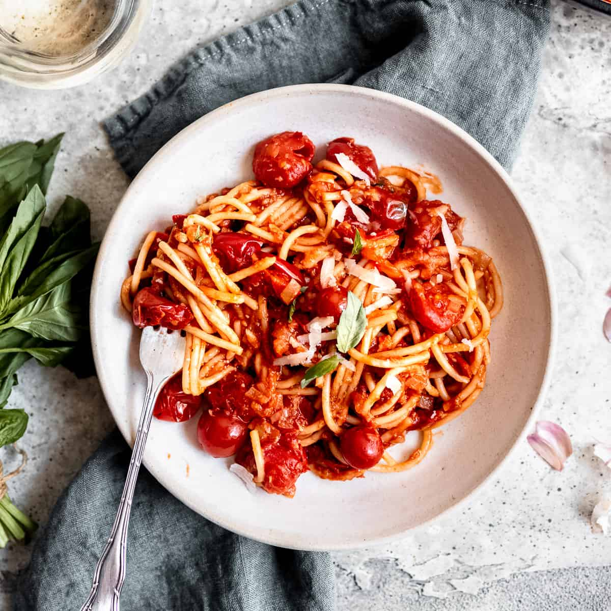

Pasta Napoletana

Description
Ingredients
- Pasta (bucatini, spaghetti, penne…)
- Canned tomatoes
- Onion
- Garlic
- Extra virgin olive oil or olive oil
- Parmesan cheese
- Fresh basil
- Salt & pepper
Steps
- Finely dice the onion
- Add the diced onion and the oil to the pan.
- Saute the onion in olive oil until soft and translucent.
- Stir in the minced garlic until fragrant.
- Add canned tomatoes, salt and pepper.
- Cook the tomato sauce for 15 minutes.
- In the meantime cook and drain the pasta.
- Add pasta to the skillet along with fresh basil.
- Toss until well combined and juicy adding a touch of cooking water.
- Serve with freshly grated parmesan cheese and torn basil leaves.